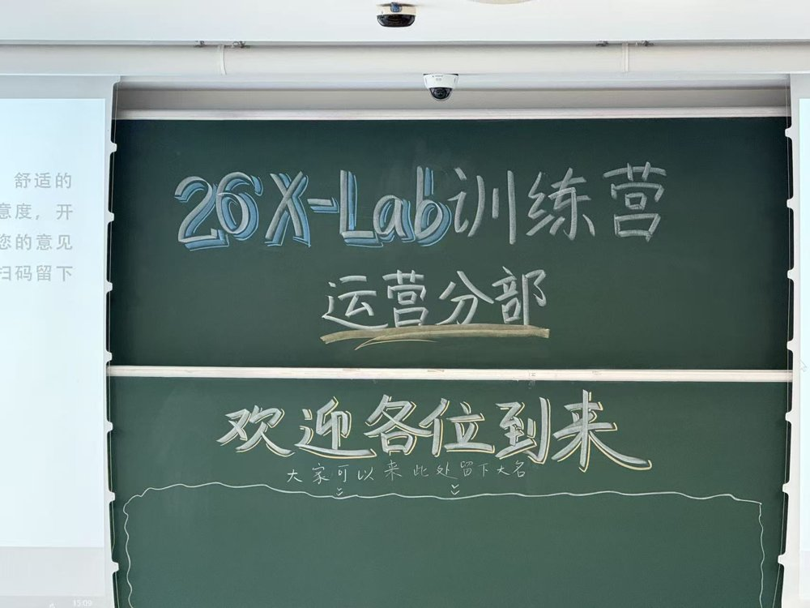
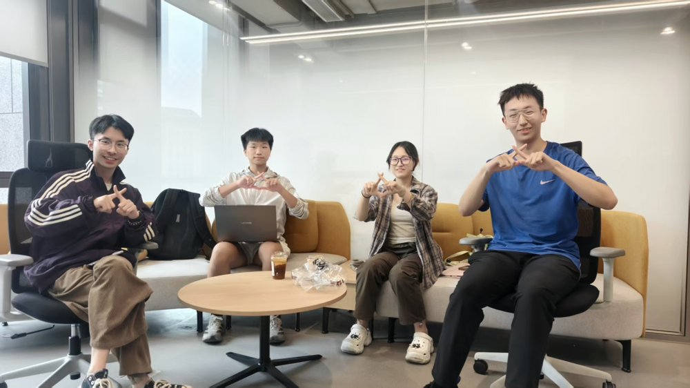
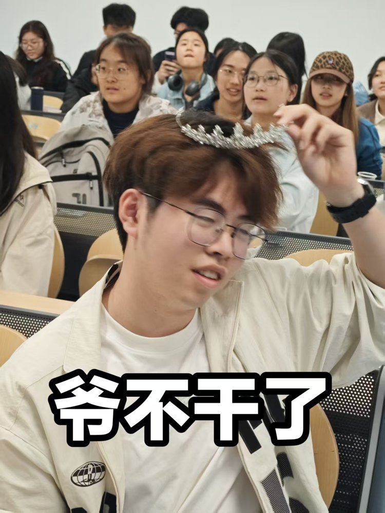
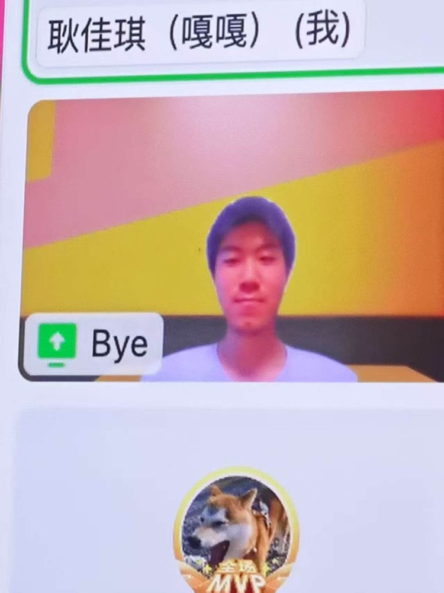
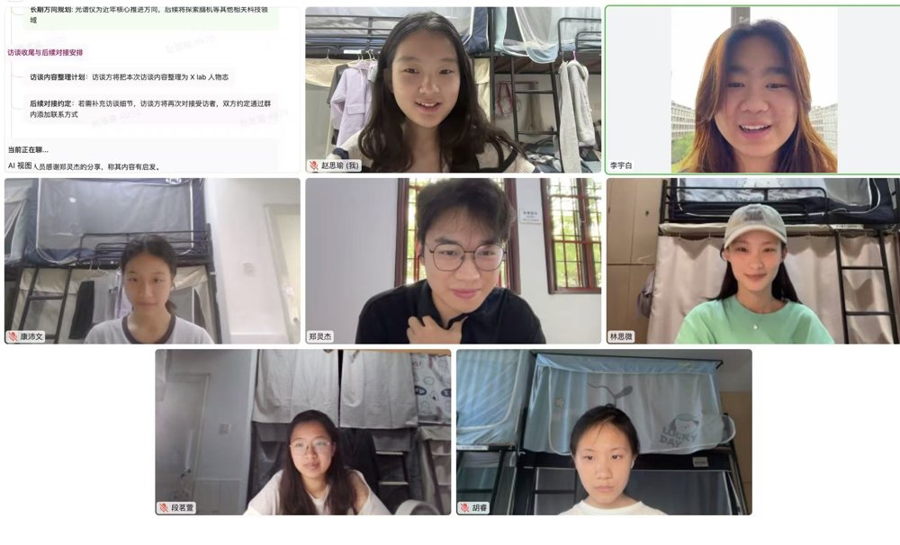
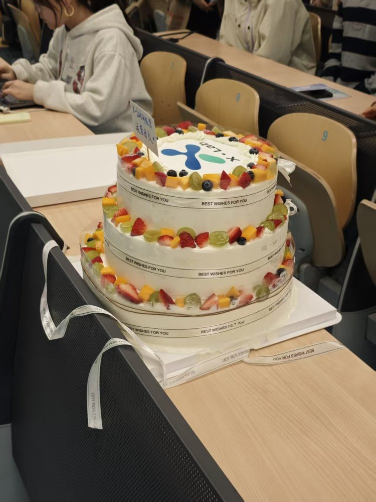
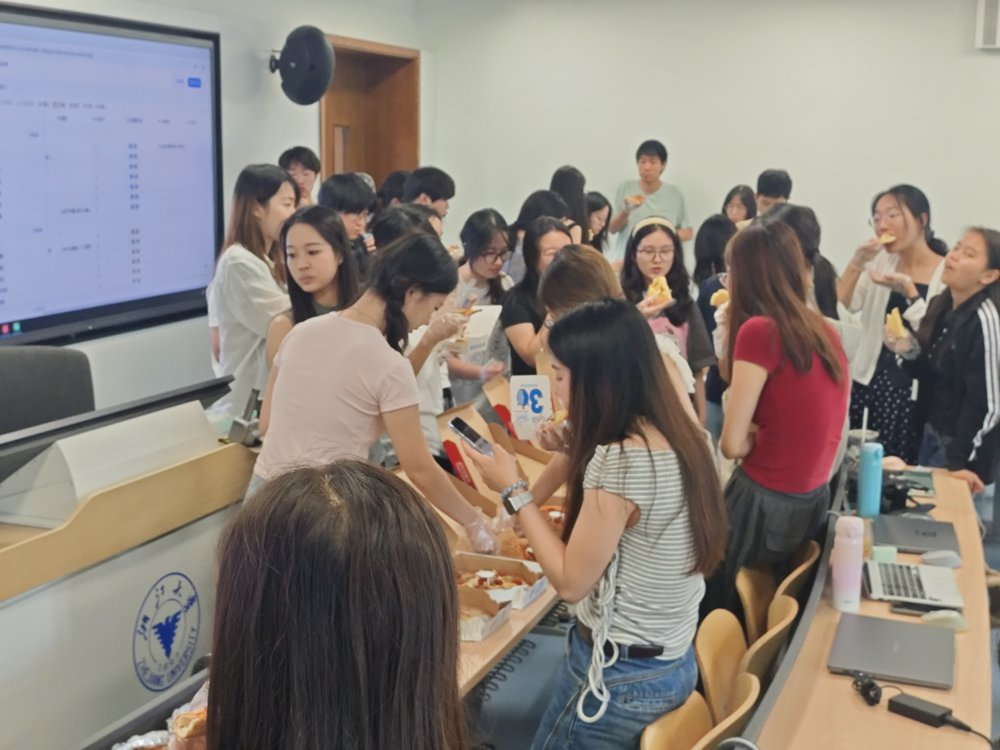
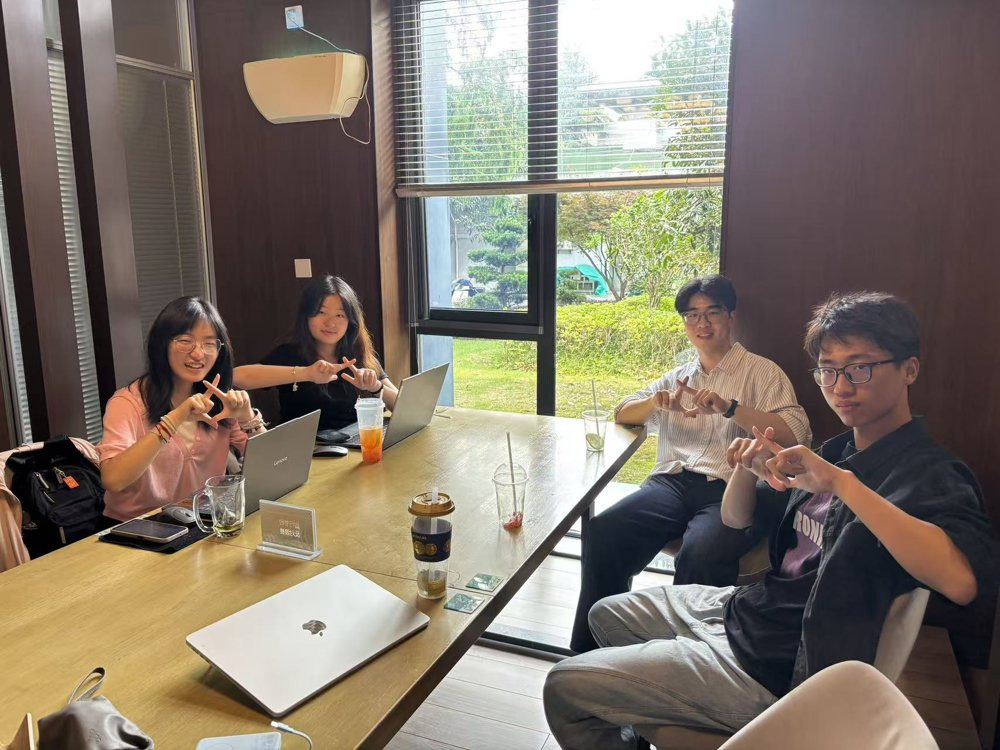
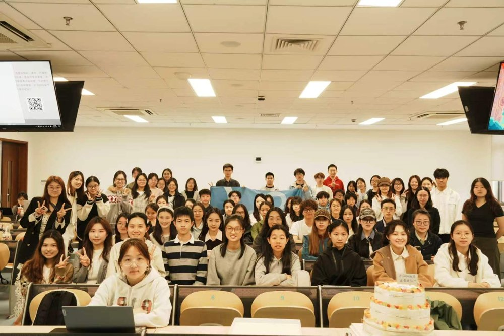
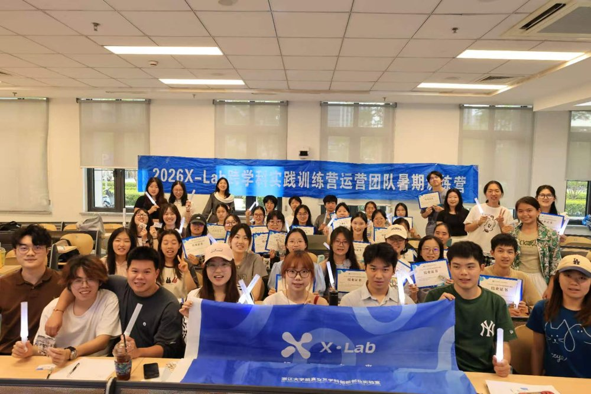

X-Lab Camp
卡片展示示意
亲爱的自己：
这里将放入你在训练营开始时
亲手写下的那张卡片。
—— 出发时的你
从出发的那一天，寄往此刻
还记得刚来到这里时，
你写给自己的那封信吗？
轻点信封
那些出发时的心愿
这里将放入你在训练营开始时
亲手写下的那张卡片。
—— 出发时的你
从相遇，到一起探索
跨学科训练营正式开启
第一次全员大会，第一次见到这一届的彼此。
从这一天起，我们有了一个共同的名字：X-Lab 跨学科训练营营员。
先认识世界，也先认识自己
商业模式内训正式开启，顺便收到了第一份灵魂作业——个人说明书。
在开始做项目之前，我们先试着回答：“我是谁，我能做什么，我想和怎样的人一起做事？”
大小喇叭，第一次开麦
话过去、话现在，也话未来。
网友奔现：组员和 Mentor 终于见面了
从群聊头像走进现实，第一次和自己的组员、Mentor 面对面。
故事的主角开始从“大家”，慢慢变成“我们”。
今晚，听见另一种认识你的方式
在一条条晚安短信里，我们慢慢记住彼此。
第一次认真思考怎么让别人愿意听你说
产品之外，还有表达；想法之外，还有传播。
什么 ESG？没关系，我们现场学
第一次接触咨询方法与 ESG 议题，
从“这是什么”到“好像有点懂了又好像还是不太懂”
兔子姐姐，你是我女神
第二次大例会如期而至。
这一次，我们一起去听见 X-Lab
学着提问，学着倾听，也学着把一个人的故事讲给更多人听。
X-Lab 不再只是我们参与的地方，也成为了值得被记录的对象。
主线任务加载中：夏天正式开打
更密集的任务、更高频的协作、更真实的项目推进。
如果说此前还是热身，那么从这里开始，副本正式进入高强度模式。
十天副本结束，但故事还没结束
短暂、密集、混乱、热烈。
项目结束了，留下来的不只成果，还有那些一起熬过、改过、笑过的瞬间。
最后一站，也是重新出发的一站
从 4 月走到 9 月，从陌生人走到并肩工作的人。
今天，我们一起回头看看这一路发生过什么，也给这段训练营正式画上一个句号。
而句号之后，是下一段故事。










写给每一个勇敢探索的你
感谢相遇，下次见！
——浙江大学启真交叉学科创新创业实验室运营团队敬上